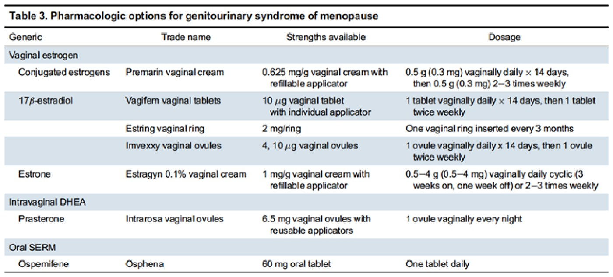
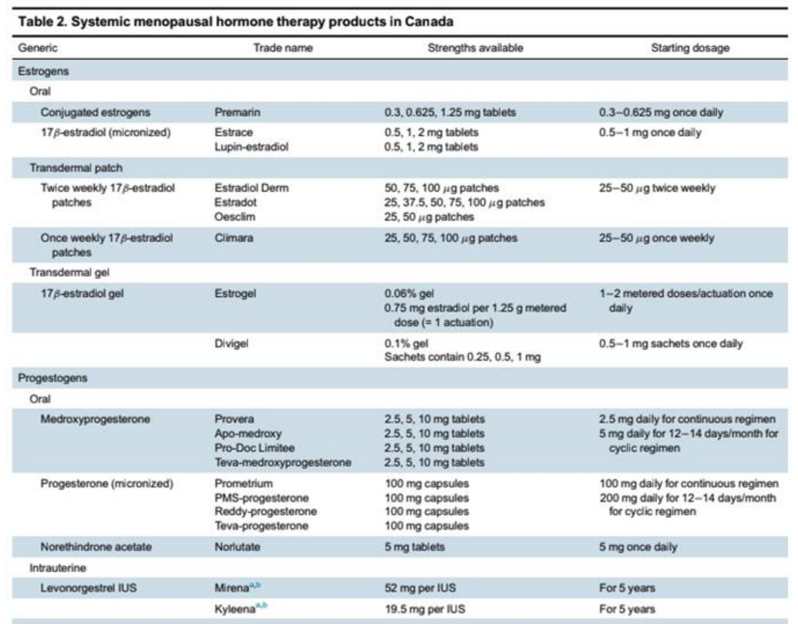
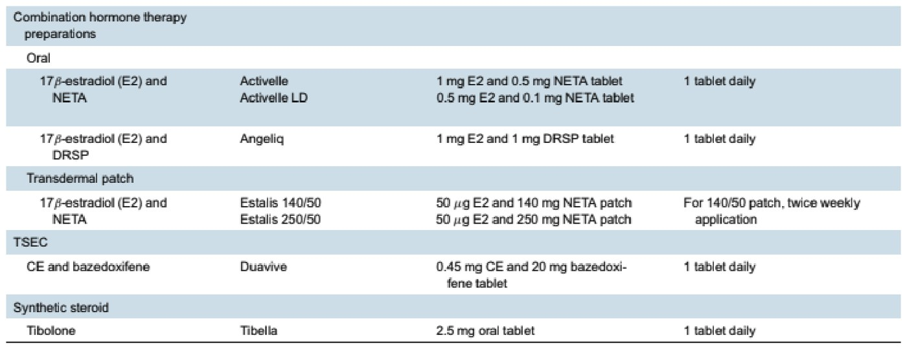
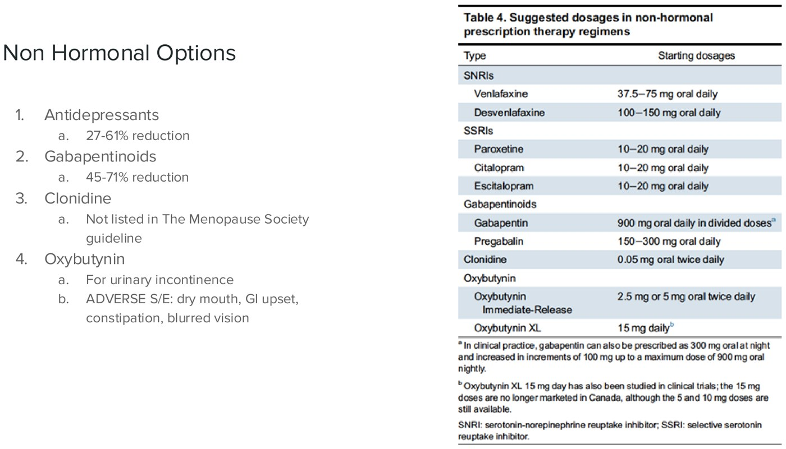

Clinical Approach to Menopause
- Menopause is a retrospective diagnosis — 12 consecutive months without menses. Average in Canada is 51–52. Perimenopause is the symptomatic transition, and she is still bleeding.
- The ovaries retire; the brain keeps shouting. Estradiol and progesterone fall, so feedback inhibition is lost and FSH and LH rise.
- Vasomotor symptoms affect ~80%. Gold-standard treatment is estrogen (~75% reduction) — and if she has a uterus, you must add progesterone.
- The MHT window: no contraindications, under 60, and within 10 years of menopause. That's where benefit is greatest and risk lowest.
- MHT has far fewer contraindications than the combined pill — the estrogen dose in a COC is 200–300× more potent.
- GSM is progressive and doesn't resolve on its own. Ladder: lifestyle → lubricants/moisturizers → physio → local estrogen, DHEA or ospemifene.
- Menopause before 45 is a cardiovascular risk factor, and starting HRT before 50 in that group is associated with lower all-cause mortality.
Learning Objectives
- Define menopause and perimenopause.
- Explain the physiology of perimenopause and menopause.
- List common symptoms of menopause.
- Outline specific nutritional and exercise recommendations for women in menopause.
- Recommend non-hormonal strategies to minimize changes and risks associated with menopause.
- Explain how to use MHT in menopause.
- List benefits and risks of MHT that are evidence-based.
Dr. Stephanie Moltner, MD FRCSC MSCP. The module is in two halves — physiology, then treatment — and closes with a three-part case you are explicitly asked to answer before revealing anything.
Physiology
Definitions first, because "menopause", "perimenopause", "early menopause" and "POI" are four different diagnoses with four different consequences.
Definitions
| Term | Definition |
|---|---|
| Menopause | Amenorrhea for 12 consecutive months. Average age in Canada 51–52 |
| Early menopause | Onset between 40 and 45 |
| Premature ovarian insufficiency (POI) | Onset before 40 |
| Perimenopause | "Around menopause" — the transition when symptoms begin. She still has menses, but their frequency changes. Can start many years before the last menstrual period |
Vasomotor Symptoms
| Feature | Detail |
|---|---|
| How common | 80% of patients. About 20% report 20–30 episodes a day |
| The hot flash itself | An unwanted sensation of heat starting in the chest and rising to the face, lasting 3–4 minutes on average |
| Impact | Mood, cognition, quality of life. Severe hot flashes are linked to cardiovascular disease and bone health |
| Other menopausal symptoms | Sleep disturbance, joint aches, mood change, urogenital and sexual concerns, memory and concentration difficulty, hair and skin changes |
1. KNDy neurons. New evidence shows KNDy neuronsHypothalamic neurons co-expressing kisspeptin, neurokinin B and dynorphin. They sit next to the thermoregulatory centre and are normally restrained by estrogen; without it they hypertrophy and fire excessively. in the hypothalamus become dysregulated and hyperactivated in the absence of estrogen.
2. Serotonin. A fall in serotonin upregulates the 5-HT2A receptor, which shifts the thermoregulatory set point.
Both theories are worth holding, because both have drugs attached: the KNDy pathway gives you NK3 receptor antagonists, the serotonin pathway gives you SSRIs/SNRIs. See the non-hormonal section below.
Genitourinary Syndrome of Menopause
GSM is the set of symptoms and signs resulting from estrogen deficiency of the genitourinary tract. It spans three territories, and patients may have any combination:
| Genital | Sexual | Urinary |
|---|---|---|
| Dryness | Lack of lubrication | Urgency |
| Burning | Dyspareunia | Dysuria |
| Irritation | Decreased libido | Recurrent UTI |
Signs on examination
- Hypovascularity — paleness of vulva, prepuce, clitoris
- Reduction in labia majora / minora volume
- Loss of pubic hair
- Introital stenosis
- Fragile / thinning vestibule
- Vaginal signs: loss of secretions, decreased caliber, loss of elasticity, pale epithelium
- pH > 5.0, because the flora has changed
Estrogen thickens the vaginal epithelium and loads it with glycogen, which lactobacilliThe dominant healthy vaginal bacteria. They ferment epithelial glycogen to lactic acid, which keeps the vaginal pH below about 4.5. ferment to lactic acid. No estrogen → no glycogen → no lactobacilli → pH climbs above 5. That same mechanism explains atrophic vaginitis in 4.5 and the recurrent UTIs above — and it is why the treatment that actually fixes GSM is estrogen, not a moisturizer.
Perimenopause
The symptoms are the same as menopause — but menses have not stopped, and that is what makes perimenopause harder to treat. Cycles may become longer or shorter, heavier or lighter before ceasing; the usual sequence is that they shorten, then lengthen, then stop.
 STRAW+10, the standard staging system for reproductive aging. Read it left to right as a timeline anchored on the final menstrual period. Note the two postmenopause columns: FSH rises (the brain pushes harder) while estrogen stays low (the ovaries have retired). The principal criteria are menstrual — endocrine measures are only supportive, which is why you do not diagnose menopause with a blood test.
STRAW+10, the standard staging system for reproductive aging. Read it left to right as a timeline anchored on the final menstrual period. Note the two postmenopause columns: FSH rises (the brain pushes harder) while estrogen stays low (the ovaries have retired). The principal criteria are menstrual — endocrine measures are only supportive, which is why you do not diagnose menopause with a blood test.
Which hormones are decreased in the post-menopausal state? → Estradiol and progesterone. Ovarian function declines, so the ovarian hormones fall; the loss of feedback inhibition then raises FSH and LH. Getting the direction right on all four is the point. The axis itself is in 2.6.
Premature Ovarian Insufficiency
 The ASRM work-up. Diagnosis needs FSH over 25 together with irregular periods. Then work through genetic, thyroid and autoimmune screening as the patient's picture directs; if all are negative it is idiopathic POI. ASRM 2024 guideline, via the lecture.
The ASRM work-up. Diagnosis needs FSH over 25 together with irregular periods. Then work through genetic, thyroid and autoimmune screening as the patient's picture directs; if all are negative it is idiopathic POI. ASRM 2024 guideline, via the lecture.
Iatrogenic POI is the category students forget: a woman whose ovaries are removed before 40 — for example, risk-reducing surgery for a BRCA1 mutation — has POI, with all the same long-term consequences.
Why early menopause matters
Evidence from the Nurses' Health Study and a 2016 systematic review for menopause occurring before 45:
| Outcome | Increase |
|---|---|
| Coronary heart disease events | 50% |
| Stroke | 23% |
| Cardiovascular mortality | 19% |
| All-cause mortality | 12% |
Beyond the numbers: higher risk of cognitive decline, reduced quality of life from hot flashes, vaginal dryness, sexual dysfunction, mood and sleep disturbance, and poorer bone health.
In the long-term Nurses' Health Study analysis, women who started hormone replacement before age 50 had lower all-cause mortality than those who did not. Which reframes the whole conversation: in early menopause, MHT is not a lifestyle choice about hot flashes — it is replacing a hormone she should still have, for the years she should still have had it.
Treatment
GSM first, because it has its own ladder; then vasomotor symptoms, hormonal and non-hormonal.
Treating GSM
Treatment progresses from lifestyle and simple over-the-counter measures to targeted hormonal therapy, depending on severity and on what the patient wants.
| Step | What and why |
|---|---|
| 1. Lifestyle | Vulvar hygiene — avoid irritants and triggers (scented products, douching, depilatory creams). Cut down caffeine, a known bladder irritant. Regular sexual activity, coitus or masturbation, genuinely helps by maintaining blood flow and tissue elasticity |
| 2. Lubricants | Reduce friction during intercourse. Water-based products are generally the most helpful |
| 3. Moisturizers | Polycarbophil or hyaluronic acid — they bind water and mimic a natural biofilm. Used regularly, not just before sex |
| 4. Pelvic physiotherapy | Very effective, especially for dyspareunia |
| 5. Second line | Estrogen is the mainstay — estradiol cream, tablet or vaginal ring, all inserted directly into the vagina. DHEA is inserted vaginally and converted to testosterone and estrogen within the mucosa. Ospemifene is an oral SERMSelective estrogen receptor modulator — agonist in some tissues, antagonist in others, depending on receptor isoform and local co-factors. See 4.4. with tissue-selective agonist effect on vaginal epithelium |

The actual Canadian products. Note the pattern in the dosage column: nearly all vaginal estrogens are loaded daily for about two weeks, then dropped to twice weekly. The ring is the once-every-three-months option. Ospemifene is the only oral agent here — everything else is local.Nutritional and Lifestyle Changes for Vasomotor Symptoms
| Intervention | Evidence |
|---|---|
| Cognitive behavioural therapy and clinical hypnosis | Shown to make a real difference |
| Weight loss | May help |
| Yoga and exercise | Excellent for overall health, but not shown to directly improve hot flashes |
| Cooling techniques, avoiding triggers | Useful |
| Nutrition targets | Sodium < 1300 mg · vitamin D 800 IU · calcium 1200 mg daily |
| Natural health products | Heavily promoted; no clear benefit shown. Possible exception: s-equol products — still not currently recommended |
Menopausal Hormone Therapy
| Gold standard for VMS | Estrogen — roughly a 75% reduction in vasomotor symptoms |
| If she has a uterus | You must add progesterone. Unopposed estrogen raises the risk of endometrial cancer (see 5.1) |
| Estrogen routes | Pill, transdermal patch, or gel |
| Progesterone routes | Oral tablets, or an IUD — Mirena or Kyleena, approved for 5 years of endometrial protection (Mirena has data supporting up to 8 years for contraception) |
| Combined options | Available as a single pill or patch, which makes treatment more convenient |
| When it can be started safely | No contraindications, under 60, and within 10 years of menopause onset — the group with the greatest benefit and least risk |

Systemic MHT products in Canada. The useful structure is the left column: estrogens (oral, patch, gel) then progestogens (oral, intrauterine). Notice Mirena and Kyleena appear here as the progestogen of an MHT regimen — the same device you met as a LARC in 4.3, doing a different job.
Combination preparations — one pill or patch instead of two. Two entries are worth naming: TSEC (conjugated estrogens + bazedoxifene) uses a SERM instead of a progestogen for endometrial protection, and tibolone is a synthetic steroid with estrogenic, progestogenic and androgenic activity.![Slide reproducing Table 1, contraindications to systemic menopausal hormone therapy: contraindications to estrogen include undiagnosed abnormal vaginal bleeding, known suspected or history of breast cancer, known or suspected estrogen-dependent cancers, coronary heart disease, active or history of venous thromboembolism, active or history of stroke, known thrombophilia, active liver disease and known or suspected pregnancy; contraindications to progestogen are undiagnosed abnormal vaginal bleeding and current or history of breast cancer.](../../../../assets/images/week-5/menopause/mht-contraindications.jpg) The contraindications — note how short the progestogen column is. Almost everything that blocks MHT blocks the estrogen component. Undiagnosed abnormal vaginal bleeding tops both columns, which links straight back to 5.1: work the bleeding up first.
The contraindications — note how short the progestogen column is. Almost everything that blocks MHT blocks the estrogen component. Undiagnosed abnormal vaginal bleeding tops both columns, which links straight back to 5.1: work the bleeding up first.
Students often import the combined-oral-contraceptive rules wholesale and refuse MHT to patients who could safely have it. The reason the lists differ is dose: the estrogen in a COC is 200–300 times more potent than the estrogen in menopausal hormone therapy. Contraceptive doses are designed to suppress an axis; MHT doses are designed to replace a deficiency. Compare the COC contraindications in 4.3.
Non-Hormonal Options for Vasomotor Symptoms
| Class | Effect / note |
|---|---|
| Antidepressants (SNRIs, SSRIs) | 27–61% reduction. Usually tried first |
| Gabapentinoids | 45–71% reduction. Also first-line in practice |
| Clonidine | Listed as a reasonable option in the SOGC guideline, but not listed by the current Menopause Society guideline |
| Oxybutynin | For urinary incontinence. Adverse effects: dry mouth, GI upset, constipation, blurred vision |
| Neurokinin receptor antagonists | Fezolinetant (most recently approved in Canada) and elinzanetant |
Antidepressants and gabapentinoids tend to be used first, with careful attention to their side-effect profiles.

Actual starting doses. Worth noticing that these are lower than the psychiatric doses of the same drugs — you are treating vasomotor symptoms, not depression. Mechanism of the newest drug class. Falling estradiol disinhibits the KNDy neuron, which drives efferent heat-dissipation pathways — the hot flash. NK3 receptor antagonists block neurokinin B at that neuron and calm it down, producing a significant reduction in vasomotor symptoms without giving estrogen. This is why the physiology at the top of the page was worth learning.
Mechanism of the newest drug class. Falling estradiol disinhibits the KNDy neuron, which drives efferent heat-dissipation pathways — the hot flash. NK3 receptor antagonists block neurokinin B at that neuron and calm it down, producing a significant reduction in vasomotor symptoms without giving estrogen. This is why the physiology at the top of the page was worth learning.
Assessing the Menopausal Patient
| Part of the visit | What to cover |
|---|---|
| Background | Medical conditions, surgical history, allergies, medications |
| HPI — menstruation | Last menstrual period, cycle regularity, heavy or intermenstrual bleeding |
| HPI — symptoms | Hot flashes, sleep, mood, GSM, libido |
| If considering MHT | Always screen for contraindications — history of blood clots, breast cancer |
| Physical | Vulvar exam if she has GSM symptoms, to rule out a skin condition (see 4.11) |
| Screening | Is cervical screening due? (4.8) |
| Endometrial biopsy | Consider for abnormal bleeding — especially over 40, or heavy/intermenstrual bleeding. Also for anyone on MHT who is still bleeding beyond six months |
The Case — Ms. Thomas
The module's instruction, verbatim: think about or write down your answers before revealing them — this will help you develop clinical thinking skills much more than simply reading the answers. Each answer below is a separate short video in the module; the substance is reproduced here.
Visit 1 — 49 years old, annual check-up
Healthy. 15 lb weight gain over the past year. Last menses 8 months ago. Mild hot flashes. What topics might you discuss at this appointment?
She is in the right age range with symptoms of perimenopause. Reasonable ground to cover:
- Conservative management of hot flashes — cooling strategies such as loose clothing, fans, air conditioning
- Avoiding exacerbating factors — caffeine, alcohol, smoking
- Review what perimenopause is and what happens symptomatically during menopause
- The rising risk of cardiovascular disease, cancer and osteoporosis during menopause, and how to mitigate it: Canada's Food Guide dietary recommendations, regular aerobic exercise, maintaining a healthy weight
- Vitamin D and calcium supplementation
Visit 2 — six months later, now 50
Worsening hot flashes that impair her ability to function as a kindergarten teacher. She wants to try HRT but is scared, because her cousin had endometrial cancer. Is she a candidate? What would you say about the cancer?
Yes — she is a candidate. Nothing in her history is a contraindication, and a family history of an estrogen-dependent cancer is not a contraindication to HRT. To address the fear:
- Concurrent progestogen counteracts the proliferative effect of estrogen on the endometrium
- She would be given the lowest dose needed to control symptoms, and the plan re-evaluated at regular intervals to limit duration
- She must contact her physician for any vaginal bleeding, as that could signal endometrial disease
- There are good diagnostic options for assessing the endometrium, and HRT-related endometrial pathology is often caught early and treated
Visit 3 — six months later again
Hot flashes improved on HRT. But she now has a sharp, tearing sensation with intercourse and significant vaginal dryness. Describe your approach.
- Complete history focused on the nature of the pain, including a detailed social and relationship history — sexual dysfunction in women is almost always multifactorial
- Pelvic examination for vulvovaginal atrophy and for other vulvar conditions prevalent after menopause, particularly lichen sclerosus
- If it is vulvovaginal atrophy, the most effective treatment is local estrogen therapy
- Lichen sclerosus in post-menopausal women is often treated with both a high-potency steroid and vaginal estrogen
She is already on HRT and still has GSM. That is expected — systemic estrogen does not reliably treat genitourinary symptoms, which is why local therapy exists as its own ladder. And the instruction to examine rather than assume is the real teaching point: this could be atrophy, or it could be lichen sclerosus, which scars, and which carries a squamous cell carcinoma risk (4.11).
Built from Dr. Stephanie Moltner's "Clinical Approach to Menopause" module — its written content, its slide deck, and its three case-answer recordings. All figures are slides from the deck, which reproduces tables from Canadian menopause guidance, the ASRM 2024 POI guideline flow chart, and the STRAW+10 staging figure (adapted from Harlow SD et al., "Executive summary of the Stages of Reproductive Aging Workshop +10", via the lecture). Nurses' Health Study and 2016 systematic review figures are quoted as the lecture states them. Auto-captions garbled several terms ("vocal vaginal atrophy" for vulvovaginal, "lichen sclerosis" for lichen sclerosus); the written module was followed wherever the two disagreed. The pharmacology of these hormones is in 4.4; post-menopausal bleeding on MHT is 5.1.